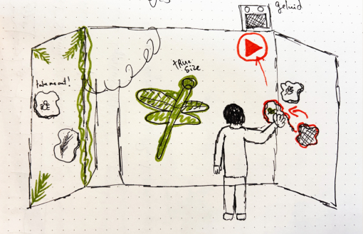
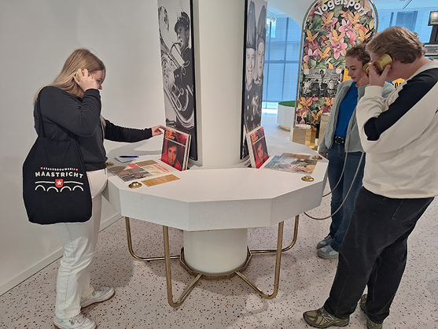
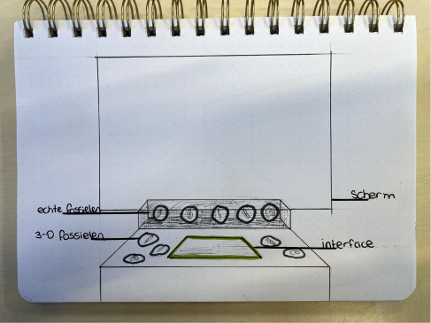
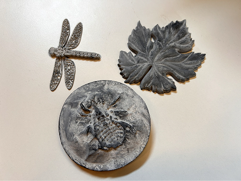
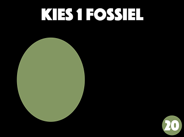
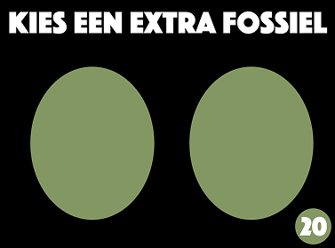

2024-2025
Design
Storytelling
UX/UI
Prototyping
Natuur Historisch Museum Maastricht
Tessa Janzen, Bradley Hafmans, Morris Cox and me
For this project, I worked on an interactive museum installation that brings fossils to life. Visitors can place physical fossils on a platform to reveal digital animations and explanations about their origins and ecological relationships. The goal was to create an engaging educational experience that connects history, science, and interaction.

Traditional museum exhibits often struggle to engage visitors in a hands-on way. Fossils and ancient life can feel distant, and visitors miss the opportunity to explore their ecological connections interactively.
We designed an interactive installation where visitors place physical fossils on a platform to trigger digital animations and explanations. This system makes learning about the Carboon era more immersive, allowing visitors to connect with prehistoric life through an engaging and exploratory experience.
Our project started with research into interactive museum experiences and ways to visualise ancient ecosystems. Our research revealed three key insights. First, the museum visit should be an immersive experience, with interaction and engagement at its core. Additionally, visitors typically come in small groups of two to four people, indicating that the installation should encourage shared exploration and collaboration. Lastly, visitors expect more than just entertainment—they seek a learning moment, wanting to gain new knowledge and a deeper understanding of the exhibited fossils and their ecological connections.


We explored and tested interaction models with prototypes. The final design focused on an intuitive, hands-on experience that combines physical objects with digital content.

We scanned and 3D-printed a fossil from the museum—a spider. We wanted to print more, but unfortunately, there wasn’t enough time. That’s why we tested the system with a different 3D model. Visitors can place a fossil on the screen in front of them on the table, and a video about that fossil will appear. If they choose two fossils, the relationship between them will be shown.

